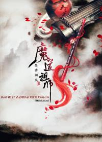

Магистр Дьявольского культа|Мo Dao Zu Shi
Когда-то давно Магистр дьявольского культа Вэй Усянь странствовал по свету, творя невообразимые бесчинства и хаос, за что миллионы людей ненавидели его. В конце концов он был предан своим шиди и убит союзом орденов, объединившихся, чтобы сокрушить его. Вэй Усянь переродился в теле помешанного, от которого отказался родной орден. Позже его против воли забрал к себе Лань Ванцзи - его давний знакомый.
Новелла:
Маньхуа:
Дунхуа:
Дорама:

Система 'спаси-себя-сам' для главного злодея|Scum villain 'Self-Saving' System
Когда-то давно Магистр дьявольского культа Вэй Усянь странствовал по свету, творя невообразимые бесчинства и хаос, за что миллионы людей ненавидели его. В конце концов он был предан своим шиди и убит союзом орденов, объединившихся, чтобы сокрушить его. Вэй Усянь переродился в теле помешанного, от которого отказался родной орден. Позже его против воли забрал к себе Лань Ванцзи - его давний знакомый.
Новелла:
Маньхуа:
Дунхуа:
Дорама: